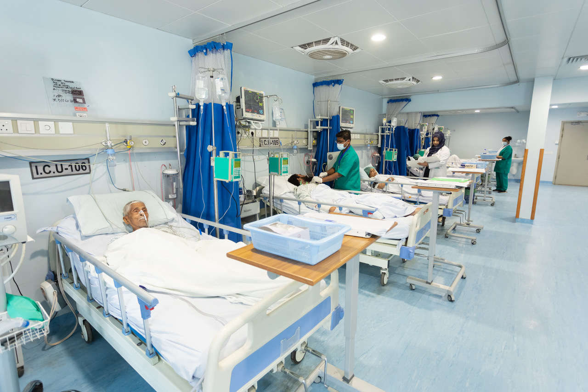
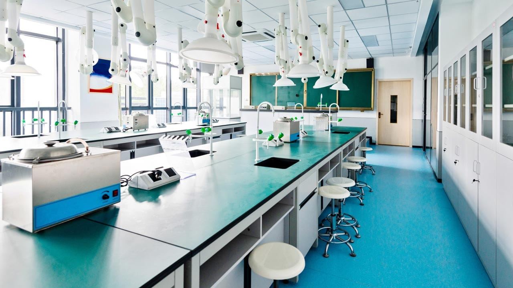

Fasilitas Kami
Poliklinik Umum

Pelayanan medis untuk segala usia dengan dokter yang berpengalaman.

ICU
Unit perawatan intensif dengan fasilitas canggih dan tenaga medis siap siaga.

Laboratorium
Pemeriksaan laboratorium untuk diagnosis yang lebih akurat dan cepat.